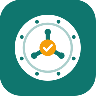

SSC Vault — Privacy Policy
In short: SSC Vault is a free study app (vocabulary, grammar, GK, maths, reasoning and steno practice). Your study data stays on your own phone and, if you sign in with Google, in your own Google Drive. There is no SSC Vault server, no advertising and no tracking. The only thing the maker sees is an anonymous count of visits (see section 4). We do not collect, see or sell your data.
1. What the app stores, and where
- On your device: the words, questions, rules, notes, tricks, practice history, settings and (if you add them) your AI keys are stored in your browser's local storage on your device.
- AI keys (for example a free Gemini key) stay on your device only. They are never saved to Google Drive or backups.
- Photos and PDFs you pick are processed on your device; they are sent out only if you choose an AI feature (see section 3), and are not kept by the app afterwards.
2. Signing in with Google and Google Drive
- "Sign in with Google" lets the app back up your data to a folder called SSC Vault in your own Google Drive, and restore it on another phone.
- The app asks only for the
drive.filepermission: it can see and edit only the files it created itself, not the rest of your Drive. - The app learns your Google account's email address only to show "Signed in as …" on your device. It is not sent anywhere else.
- Your backup belongs to you. Sign out in Settings to stop syncing; delete the SSC Vault folder in Google Drive to remove it. You can also revoke access at myaccount.google.com/permissions.
The app's use of information received from Google APIs adheres to the Google API Services User Data Policy, including the Limited Use requirements.
3. Services the app may contact
Only when you use the related feature, your device talks directly to these services (the app has no server in between):
| Service | Why | What is sent |
|---|---|---|
| Google (accounts.google.com, Drive) | Sign-in, backup and sync | Your sign-in and your backup files |
| Google Gemini, and optionally Groq, Mistral, OpenRouter, Cerebras or Anthropic | AI features you switch on by adding your own key: reading photos and PDFs, writing questions, tricks and stories | The text, photos or PDFs you ask it to work on, with your own key |
| Free dictionary and translation services (Wiktionary, dictionaryapi.dev, MyMemory) | Word meanings, pronunciation, translation | The word you look up |
| OpenStreetMap Nominatim / BigDataCloud | "My Area": finding your place name (only if you use it) | The location or place you enter |
| Gemini, ChatGPT or Claude apps | "Send to AI app" sharing | The prompt you choose to share, through your phone's share sheet |
Each of these services has its own privacy policy. If you do not add an AI key, no AI service is contacted.
4. Anonymous usage counts
To know how many people use the app, it loads Cloudflare Web Analytics (free, no cookies). Cloudflare counts visits and unique visitors and sees general information every website visit carries (country, device and browser type). The app sends it nothing else — never your questions, answers, notes, AI keys, Google account or email. You can switch this off any time in Settings → Help & support. See Cloudflare's privacy policy.
5. What we do not do
- No accounts on our side, no advertising, no cookies, no tracking across sites, no selling or sharing of data.
- No collection of contacts, location (unless you use My Area), microphone or camera data. The camera and file picker are used only when you choose to scan or upload.
6. Children
The app is a general study tool and does not knowingly collect personal information from anyone.
7. Deleting your data
- On a device: Settings → Backup & sync → "Erase on this device" for each part, or clear the site data in your browser.
- In Google Drive: delete the SSC Vault folder.
8. Changes and contact
If this policy changes, the date above changes. Questions or requests: email rlm1711204@gmail.com (or Settings → Help & support in the app).